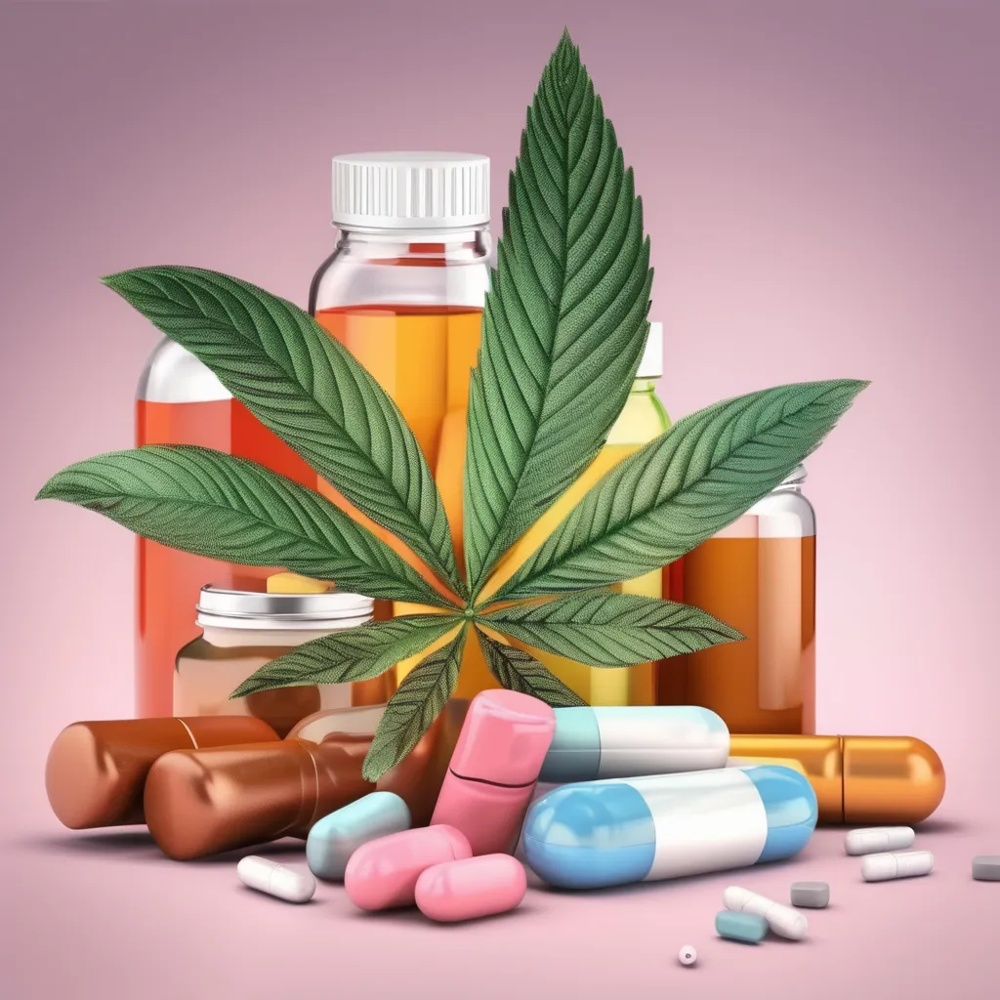
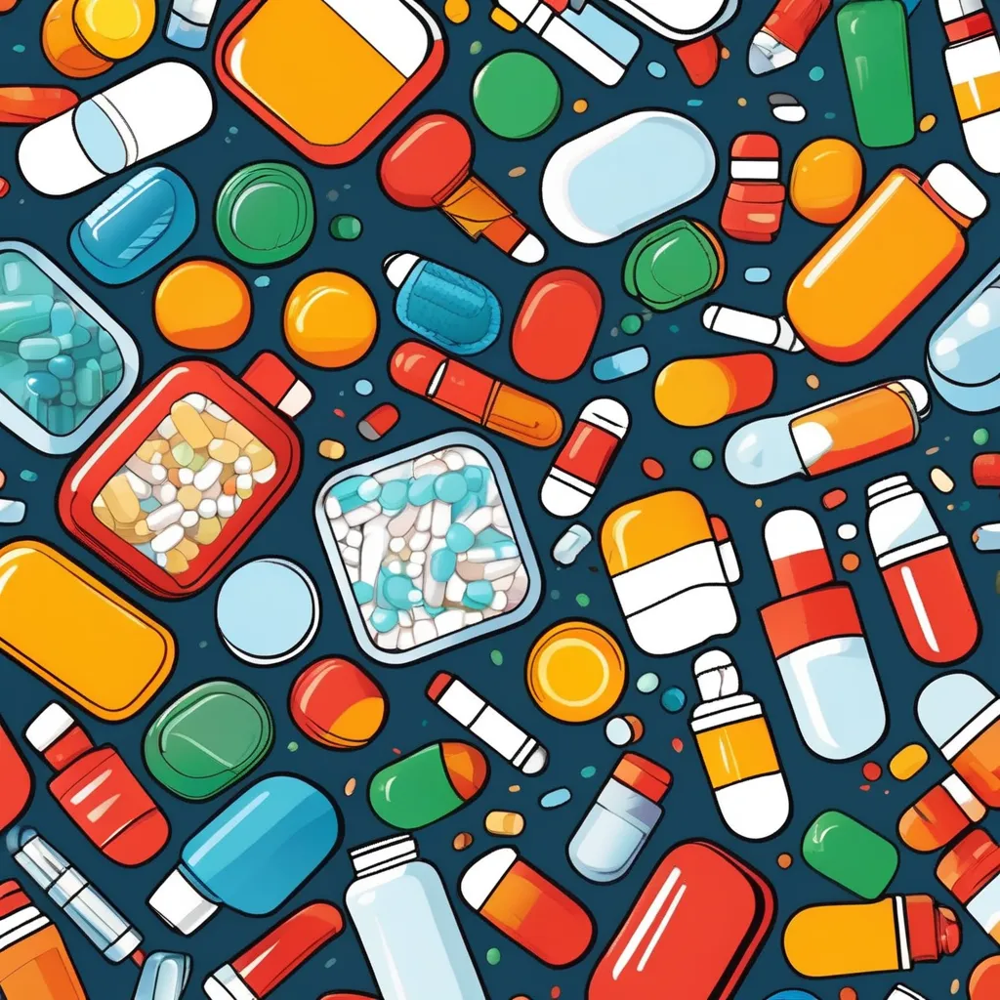

Tipos de drogas:
Drogas medicinales: Estas se prescriben para tratar enfermedades o síntomas. Incluyen analgésicos, antibióticos, antihistamínicos y muchos otros.
Drogas recreativas: Estas se utilizan para obtener placer o alterar el estado mental. Ejemplos incluyen el alcohol, la cafeína, la nicotina, la marihuana y sustancias más regulado para minimizar riesgos y efectos secundarios.
Drogas ilícitas: Estas son sustancias cuyo uso, posesión o distribución está prohibido por la ley. Ejemplos incluyen la heroína, la cocaína y el éxtasis. Su uso puede conllevar riesgos significativos para la salud y consecuencias legales.
Drogas de diseño: Son sustancias creadas en laboratorios para imitar los efectos de otras drogas. A menudo se presentan como alternativas legales a drogas ilícitas, pero pueden ser extremadamente peligrosas.

Características de los tipos de drogas
Drogas Recreativas
- Alcohol: Una de las drogas recreativas más comunes y socialmente aceptadas. En dosis moderadas, puede producir euforia y desinhibición, pero en exceso puede llevar a problemas graves de salud como enfermedades hepáticas, trastornos mentales y dependencia.
- Cafeína: Presente en el café, té y algunas bebidas energéticas. Es un estimulante que mejora temporalmente el estado de alerta y reduce la fatiga, aunque su consumo excesivo puede causar insomnio, nerviosismo y problemas cardíacos.
- Nicotina: Se encuentra en productos de tabaco. Es un estimulante altamente adictivo y perjudicial para la salud, vinculado a enfermedades cardiovasculares, cáncer de pulmón y problemas respiratorios.
- Marihuana (Cannabis): Droga psicoactiva que puede inducir relajación, alterar la percepción y aumentar el apetito. Su uso prolongado puede llevar a problemas de memoria, respiratorios y, en algunos casos, dependencia.

Drogas Medicinales
- Analgésicos: Incluyen medicamentos como el paracetamol y los opioides (morfina, oxicodona). Se utilizan para aliviar el dolor, aunque los opioides pueden ser adictivos y requieren uso controlado.
- Antibióticos: Utilizados para tratar infecciones bacterianas. Su uso excesivo o inadecuado puede contribuir a la resistencia a los antibióticos.
- Antidepresivos: Medicamentos que tratan trastornos del estado de ánimo, como los inhibidores selectivos de la recaptación de serotonina (ISRS). Su uso requiere monitoreo médico por posibles efectos secundarios.

Drogas Ilícitas
- Heroína: Un opioide altamente adictivo que causa euforia intensa, pero su uso conlleva riesgos de adicción, sobredosis y serios problemas de salud.
- Cocaína: Estimulante potente que provoca euforia, aumento de energía y alerta. El consumo excesivo puede causar problemas cardiovasculares, neurológicos y adicción.
- Éxtasis (MDMA): Conocido por efectos en la empatía y percepción sensorial. Puede provocar deshidratación, problemas cardiovasculares y alteraciones a largo plazo en la función cerebral.
Drogas de Diseño
- Éxtasis (MDMA) y otras sustancias sintéticas, como las "sales de baño" o ketamina, tienen composiciones y efectos variables. Sus perfiles de riesgo son en gran medida desconocidos, lo que incrementa sus riesgos.
Efectos y Riesgos
- Efectos a Corto Plazo: Dependiendo de la droga, estos pueden incluir euforia, relajación, aumento de energía, alucinaciones o cambios en la percepción. También pueden provocar efectos negativos como ansiedad, paranoia, mareos o problemas de coordinación.
- Efectos a largo Plazo: El uso prolongado de muchas drogas puede llevar a problemas graves de salud, incluyendo enfermedades crónicas, deterioro cognitivo, trastornos psicológicos y adicción. También puede afectar negativamente las relaciones interpersonales y el funcionamiento social.
- Adicción: Es una condición compleja que involucra cambios en el cerebro, lo que lleva a un deseo compulsivo de consumir la droga a pesar de las consecuencias negativas. La adicción puede requerir tratamiento especializado, que puede incluir terapia, medicamentos y apoyo social.
Tratamiento y Prevención
- Tratamiento: Puede incluir terapia psicológica (como la terapia cognitivo-conductual), tratamientos médicos (como medicamentos para reducir los antojos o tratar problemas concurrentes), y apoyo social a través de grupos y programas de rehabilitación.
- Prevención: Involucra educación sobre los riesgos asociados con el uso de drogas, desarrollo de habilidades de afrontamiento, y apoyo familiar y comunitario para prevenir el inicio y la progresión del uso problemático de sustancias.
Uso de Drogas en Adolescentes: Aspectos Clave
1. Razones para el uso de drogas
Curiosidad: Los adolescentes pueden experimentar con drogas por curiosidad o para probar algo nuevo.
Presión de grupo: La influencia de amigos y compañeros puede llevar a los adolescentes a consumir drogas para encajar o ser aceptados.
Problemas emocionales: El estrés, la ansiedad, la depresión o la baja autoestima pueden llevar a algunos adolescentes a buscar alivio en sustancias.
2. Consecuencias físicas
Desarrollo cerebral: El cerebro adolescente aún está en desarrollo, y el uso de drogas puede afectar negativamente su maduración y funciones cognitivas.
Salud física: Las drogas pueden tener efectos adversos en la salud física, como problemas cardiovasculares, respiratorios y gastrointestinales, entre otros.
3. Consecuencias psicológicas y emocionales
Problemas de salud mental: El uso de drogas puede contribuir a problemas de salud mental, como ansiedad, depresión y trastornos psicóticos.
Riesgo de adicción: Los adolescentes son más vulnerables a desarrollar dependencia y adicción a las drogas.
4. Consecuencias sociales
Rendimiento académico: El uso de drogas puede afectar negativamente el rendimiento escolar y llevar a problemas en el entorno educativo.
Relaciones familiares y sociales: Puede causar conflictos con la familia y afectar las relaciones con amigos y seres queridos.
5. Prevención y apoyo
Educación y comunicación: Es fundamental hablar abiertamente con los adolescentes sobre los riesgos y consecuencias del uso de drogas.
Apoyo emocional: Ofrecer apoyo emocional y buscar ayuda profesional si se detecta que el adolescente está luchando con problemas de adicción o abuso de sustancias.
6. Intervención
Asesoramiento y terapia: La intervención temprana mediante asesoramiento y terapia puede ser crucial para abordar problemas relacionados con el uso de drogas.
Programas de prevención: Existen programas y recursos diseñados para educar y prevenir el uso de drogas entre adolescentes.
El enfoque debe ser integral, combinando educación, apoyo emocional, y, cuando sea necesario, intervención profesional para ayudar a los adolescentes a evitar el uso de drogas y a enfrentar cualquier problema relacionado con ellas.
Factores de Riesgo
Diversos factores pueden aumentar la probabilidad de que los adolescentes comiencen a consumir drogas. Entre ellos se encuentran la presión de grupo, problemas familiares, dificultades académicas, y una predisposición genética. El entorno social y la exposición a ambientes donde el consumo de drogas es normalizado también juegan un papel importante.Comprender estos factores es esencial para desarrollar estrategias efectivas de prevención.
Educación y Conciencia
Una de las estrategias más efectivas para prevenir el consumo de drogas en menores es la educación. Programas educativos que informen a los jóvenes sobre los riesgos y efectos del consumo de drogas pueden ayudar a crear una mayor conciencia. Estos programas deben ser impartidos en las escuelas y comunidades, y deben involucrar a padres y educadores para reforzar el mensaje.
VOLVER A PÁGINA PRINCIPAL.